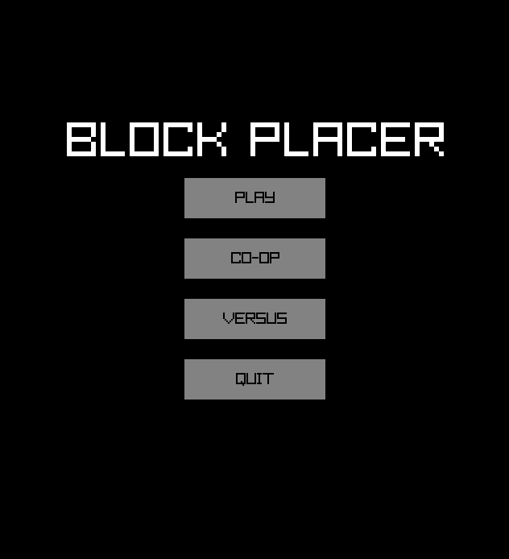
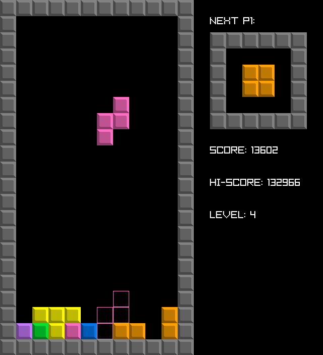
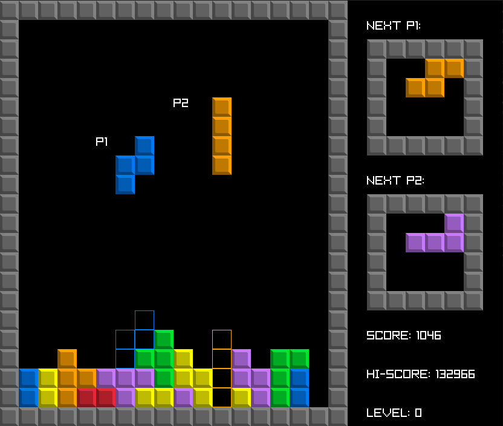
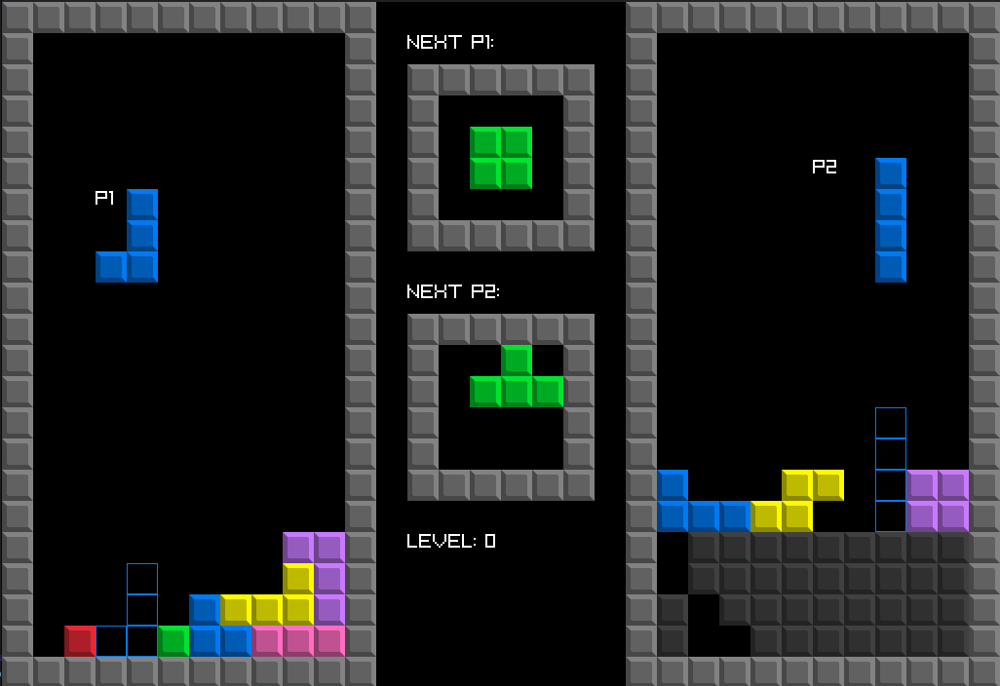

Block Placer
Daniel Vishnevsky
Block Placer is a game heavily inspired by Tetris. Play solo, co-op or versus!
Features
Different game states are handled with a state handler. Unlike most Tetris clones, this one features 3 playable modes - solo, co-op and versus. This is what I'm most proud of. In co-op mode you can play with a friend on a larger map or challenge yourself to control two tetrominoes at the same time - both are extremely fun to do! But if you're more on the competitive side then you can challenge your friends in versus.
Playing with friends is really fun, but you can't always do it on a single machine like this game requires. That's why I might come back to this in the future and learn how to implement networking to let players play with each other around the world.
Development
This game was made for the sole reason of transitioning from SFML to Raylib and it served its purpose well. This is a great project to make. I originally wanted to just make the Tetris logic but making it was so fun that I just had to add more game-modes. I think that the biggest challenge was to unify the logic of all 3 game-modes in a single state. I had some interesting errors in the process.
I had no idea how to use Raylib when making this. Something about throwing myself into the unknown feels right at home. Reminds me of the first time playing Terraria. At first it was weird to draw things in immediate mode instead of with objects like in SFML but I got used to it and in my opinion, it is a much better way to handle graphics.
Play
The game is available for free on Windows, Linux and MacOS.
Gallery



